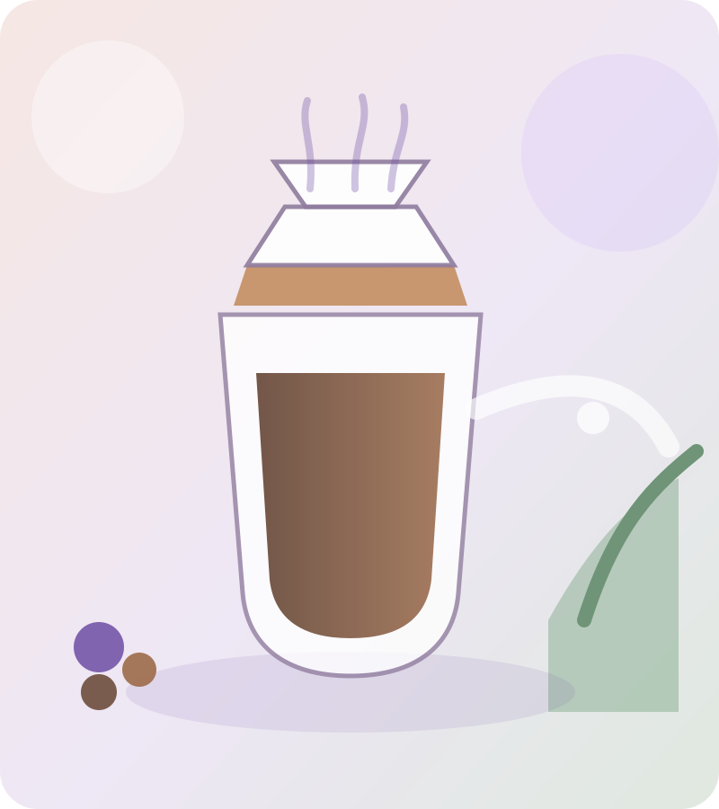

V60'dan Cold Brew'e kadar.
Damaktaki zevkine, seçtiğin demleme yöntemine ve elindeki çekirdeğe göre sana özel üçüncü dalga kahve reçeteni oluştur.

V60'dan Cold Brew'e kadar.
Gövde, asidite ve tatlılık.
Ölçüler ve döküş planı hazır.
Önce kahvenin tarzını seçin.
Seçtiğiniz kahve tarzına uygun yöntemi belirleyin.
Kahvenizin karakterini seçin.
İdeal kahve karakterini belirleyin.
Elinizdeki çekirdeği seçin veya öneri alın.
Miktarı seçin.